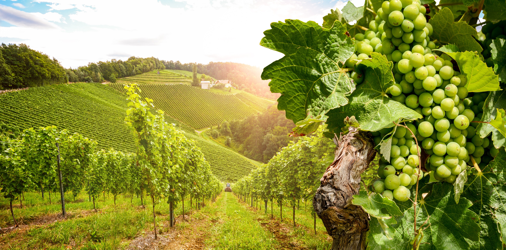
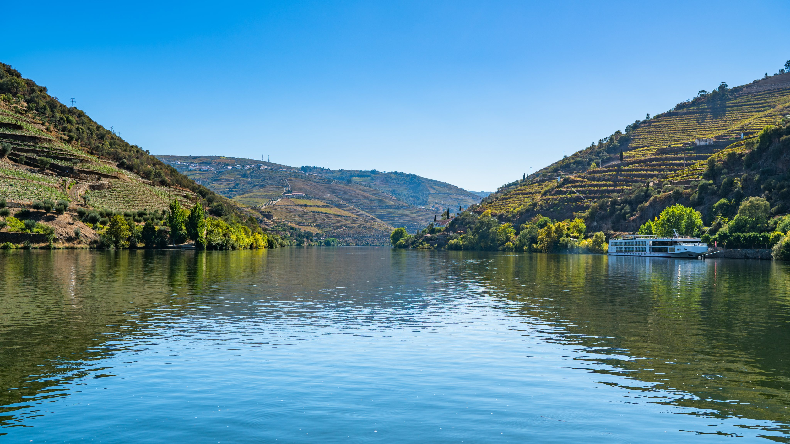

Sail through the breathtaking Douro River Valley, where terraced vineyards and rustic farms shape one of Europe's most unspoiled landscapes. Depart from Porto, the "City of Bridges," and explore Regua, the heart of Port wine country. Journey to Salamanca, the UNESCO "Golden City," and savor wines from historic estates. Experience the timeless beauty and charm of Portugal's Douro region.
Learn More
Begin your journey in Porto, the "City of Bridges," and sail through the UNESCO-listed Douro River Valley lined with terraced vineyards and charming quintas. Taste exquisite wines and uncover Portugal's winemaking heritage. Visit Castelo Rodrigo, enjoy lunch at a vineyard in Pinhão, and explore Lamego's sacred sites.
Learn More